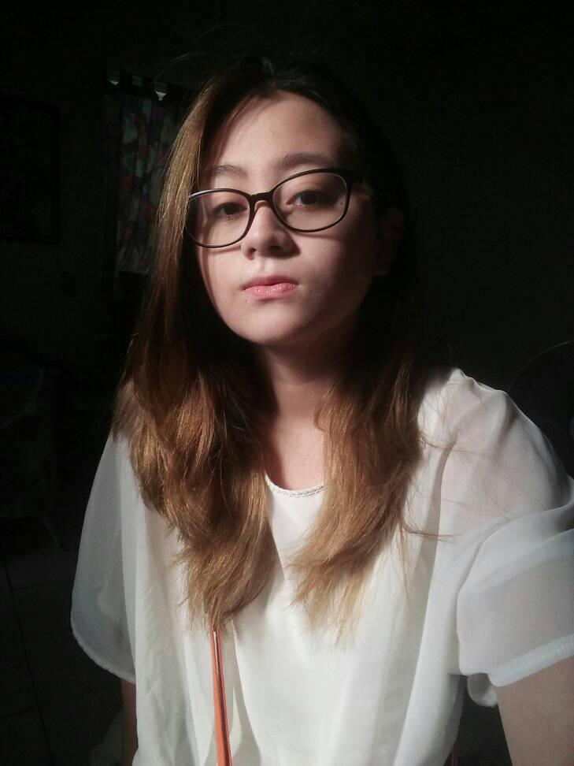

About Us
Shannon Alyson M. Po is an undergraduate at the University of St. La Salle (USLS) - Bacolod pursuing a bachelor’s degree in Information Technology.
She has always found the landscapes, wildlife, and vegetation of the Philippines to be beautiful. However, as time passed, pollution kept rapidly affecting the environment to the point where most indigenous species have become endangered and even extinct.
As an IT student, she hopes to use the knowledge and skills she will learn to create a program that can help solve the problem of pollution in the Philippines. Her particular focus is on the education and strict implementation of proper waste disposal, planting trees, cleaning the oceans, and promoting renewable energy.

References
- Abano, I. (2021, March 9). Health experts in the Philippines lead the fight against dirty air. Earth Journalism Network. Retrieved March 24, 2022, from https://earthjournalism.net/stories/health-experts-in-the-philippines-lead-the-fight-against-dirty-air#:%7E:text=The%20Philippines%20Clean%20Air%20Act,and%20waste%20
minimization%20measures%2C%20such - Ecological Solid Waste Management Act of 2000, Rep. Act No. 9003 (Jan. 26, 2001)(Phil.), https://www.officialgazette.gov.ph/2001/01/26/republic-act-no-9003-s-2001/
- Encyclopedia Britannica. (2022, February 22). Pollution | Definition, History, Types, & Facts. Retrieved March 23, 2022, from https://www.britannica.com/science/pollution-environment
- Environmental Performance Index. (n.d.). Environmental Performance Index. Retrieved March 23, 2022, from https://epi.yale.edu/epi-country-report/PHL
- National Geographic Society. (2012, October 9). Pollution. Retrieved March 23, 2022, from https://www.nationalgeographic.org/encyclopedia/pollution/
- Oil Pollution Compensation Act of 2007, Rep. Act No. 9483 (June 2, 2007)(Phil.), https://www.officialgazette.gov.ph/2007/06/02/republic-act-no-9483/
- Philippine Clean Air Act of 1999, Rep. Act No. 8749 (June 23, 1999)(Phil.), https://lawphil.net/statutes/repacts/ra1999/ra_8749_1999.html
- Philippine Clean Water Act of 2004, Rep. Act No. 9275 (March 22 2004)(Phil.), https://r12.emb.gov.ph/ra-9275-the-philippine-clean-water-act/#:~:text=The%20Philippine%20Clean%20Water%20Act%20of%202004%
20(Republic%20Act%20No,and%20community%2Fhousehold%20activities). - Sarmiento, B. (2018, October 9). Plastic trash from the ‘sachet economy’ chokes the Philippines’ seas. Mongabay Environmental News. Retrieved March 10, 2022, from https://news.mongabay.com/2018/10/plastic-trash-from-the-sachet-economy-chokes-the-philippines-seas/
- SEA Circular. (2020, October 27). Philippines. Retrieved March 10, 2022, from https://www.sea-circular.org/country/philippines/#:%7E:text=The%20confluence%20of%20a%20
growing,leakage%20and%20plastic%20pollution%20problems - Singh, D. (2021, October 12). 10 Best Ways to Reduce Air Pollution. AQI India. Retrieved March 24, 2022, from https://www.aqi.in/blog/10-best-ways-to-reduce-air-pollution/
- Tobert, A. (2020, February 7). 3 ways we can solve the air pollution crisis. Greenpeace Philippines. Retrieved March 24, 2022, from https://www.greenpeace.org/philippines/story/4046/3-ways-we-can-solve-the-air-pollution-crisis/
- United States Environmental Protection Agency. (n.d.). Actions You Can Take to Reduce Air Pollution. Retrieved March 23, 2022, from https://www3.epa.gov/region1/airquality/reducepollution.html